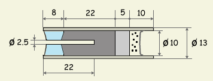

az AAA-motorba
Az AAA-motor egy nagyon egyszerû kismotor ami könnyen elkészíthetõ és kiválóan alkalmas a rakétamotor mûködésének megértésére. Felépítése teljes mértékben megegyezik a hagyományos ún. lõporos motrokéval. A motor fala csomagolópapirból, fúvókája pedig gipszbõl készül és üzemanyagként a K66 névre keresztelt keveréket használja. Méretei megegyeznek a szabványos A-kategóriás motrokéval, azaz 13x45 mm, összimpulzusa szerint szintén A kategóriás (kb. 2 Ns). A szükséges méret kialakításához AAA típusú ceruzaelemet használunk, innen a név. A motor felépítése és méretei a mellélelt ábrán láthatóak. Maximum 40 g induló tömegû rakétákba ajánlott.
|  |
| 1. Ábra: AAA-motor tervrajza (méretek mm-ben) |
A motorköpeny csomagolópapírból készül amit vízüveges CMC-vel ragasztunk össze. A csomagolópapír a papírtasakok készítéséhez is használt, barna színû, meglehetõsen erõs papír, valamivel vastagabb a nyomtatópapírnál. A CMC tapétragasztó, bármely háztartási boltban beszerezhetõ és rakétamotrok készítésére kiváló. A csomagolópapírból 4.5 cm széles és kb. 30 cm hosszú csíkot vágunk és teljes felületét bekenjük ragasztóval, kivéve az elsõ néhány centimétert, hogy ne ragadjon a sablonra. Sablonként egy AAA típusú ceruzaelemet használunk, ennek külsõ átmérõje 10 mm. A beragasztózott papírcsíkot a rakétatest oldalon leírt papírcsõkészítési metódus szerint eljárva felcsavarjuk a ceruzaelemre. Igyekezzünk minél szorosabban és pontosabban csavarni. A papírcsövek teljes kiszáradásához legalább egy nap szükséges szobahõmérsékleten. Kiszáradás után a papírcsõ külsõ átmérõje 13 mm kell legyen.
A fúvóka gipszbõl készül, ami nagyon kopik, de ebbe a kismotorba éppen megfelel. A fúvóka egy egyszerû furatos dugó, belsõ konvergens résszel. Hatásfoka igen alacsony, viszont cserébe igen könnyen elkészíthetõ. Gipszporból vízzel kemény pasztát keverünk, amit a papírcsövek végébe tömünk 1 cm hosszan. Jó igyekezni, mert a gipsz néhány perc alatt megszilárdul. Lényeges, hogy a papírcsövek ne legyenek teljesen kiszáradva amikor a gipszet belnyomkodjuk. Ez azért szükséges, mert száradás közben a papírcsõ összehúzódik és megszorítja a gipszdugót. Így biztosan nem fordul elõ, hogy a fúvókát kilõné a motor nyomása. A gipsz 20 - 30 perc alatt eléggé megkeményedik ahhoz, hogy kényelmesen ki tudjuk alakítani a fúvóka formáját. Egy 9 mm-es fúróhegyet kézzel forgatva könnyedén kialakíthatjuk a belsõ konvergens részt. Ezután egy 2.5 mm-es fúróval óvatosan átfúrjuk a gipszdugót, ügyelve, hogy minél inkább középen legyen a lyuk. Az így elkészített motorköpenyt kb. egy napig szárítjuk mielõtt az üzemanyagot belepréselnénk
Az üzemanyag 66% KNO3-ból, 23% szénbõl és 11% kénbõl készül (én egyszerûen K66-nak hívom). Készítése a lõporos üzemanyagoknál leírt módon történik. Fontos, hogy nedvesen nagyon finomra legyen õrölve, különben nem fog elég gyorsan égni. Az üzemanyag legalább 1.6 g/cm3 sûrûségre préselve kerül a motorba. A motorba töltés elõtt a K66-ot kissé megnedvesítjük egészségügyi szesszel (kb. 5-6% szesz kell bele). A nedves K66-ot bátran lehet préselni, mert nem áll fenn a begyúlás veszélye.
A késleltetõ és kidobótöltet: késleltetõként KNO3/dextróz 2/1 arányú keverékét használjuk, ugyanúgy 1.6 g/cm3-re tömörítve, mint az üzemanyag. Az ábrán látható 5 mm hosszan préselt késleltetõ kb. 3 másodperc idõzítést eredményez. Kidobótöltetként 0.2 g préseletlen feketelõport (összetétel: 75/15/10 KNO3/C/S) használunk. A lõpor helyett használhatunk 0.3 g préseletlen K66-ot is. A kidobótöltet kihullását megakadályozandó, a motrot egy 13 mm-es átmérõjû papírkarikával zárjuk le, amelyet a kismotor végébe tolunk a gyártáshoz használt AAA ceruzaelem segítségével.
Az üzemanyag betöltése:
|
| 1. Ábra: Üzemanyag préselése az AAA-motorba |
A préselést úgy kell végezni, hogy egyben kialakítsuk a furatot a motor közepében. Erre a célra egy 2 - 2.5 mm átmérõjû rudacska szükséges (én fogvájót használok, de éppenséggel bicikliküllõ is jó lehet), amit egy darab fába illesztünk úgy, hogy 22 mm kilógjon belõle. A kiálló fogvájóvégre ráillesztjük az elõre elkészített motorhüvelyt, így a motor belsejébe kb. 15 mm-re fog belógni a fogvájó. A présrúd egy 9.5 mm-es fából készült rúd, amelynek egyik végébe egy 20 mm hosszú 3 - 4 mm átmérõjû furatot alakítunk ki. Szükséges ezen kívül egy másik présrúd is, furat nélkül. Ezt akkor használjuk, ha az üzemanyag szintje már magasabb mint a fogvájó belógó része. Tanácsos a présrudak végét szigetelõszalaggal jó erõsen körbetekerni, hogy ne menjen szét a kalapálás során.
Figyelem! A K66 tömörítése nem teljesen veszélytelen, ám a biztonsági elõírásokat betartva ezt a veszélyt minimálisra lehet csökkenteni. Soha ne végezzük a préselést szárazon, mindig legyen kellõen megnedvesítve az üzemanyag. A nedves K66 is ég, de nedvesen sokkal kisebb a begyulladás valószínûsége. Soha ne használjunk acélból vagy vasból készült préseszközöket, mert ezek szikrát képezhetnek. Használjunk keményfa- vagy bronzeszközöket és viseljünk védõfelszerelést a préselés során.
Préselés után kihúzzuk a furatból a fogvájót, óvatosan, mert könnyen beletörik, a préselt üzemanyag ugyanis nagyon szorosan fogja azt tartani. Ezután a motrot ki kell szárítani. Ha a préseléshez alkoholt használtunk, 40-50 °C-on egy napig szárítjuk. Amennyiben alkohol helyett vízzel préseltünk, még hosszabb ideig hagyjuk száradni. A kiszáradt motrokat száraz helyen tároljuk.
Begyújtás: Mint a lõporos motrok általában, ez a motor is nagyon könnyen begyújtható, gyújtózsinór vagy egyszerû elektromos gyújtás tökéletesen megfelel a célnak. Ey utóbbi esetén tanácsos az ellenállást az üzemanyagcsatorna végéig benyomni, hogy az égés minél bennebbrõl kezdõdjön. Tilos a furatba bármilyen a K66-nál energikusabb gyújtóanyagot tölteni, mert a hirtelen fejlõdõ nyomás elrepesztheti ay üzemanyagtömböt, ami motorrobbanáshoz vezethet.
Teljesítményadatok: sajnos nem állnak rendelkezésemre mérõpados eredmények, a kismotor hozzávetõlegesen 2 - 3 N tolóerejû és kevesebb mint 1 sec az égési ideje. Általában 25 g induló tömegû rakétákban használom, de egyszer kipróbáltam egy 40 g-os rakétával is, mert kíváncsi voltam mennyire lesz "lusta". Nagyon szépen startolt 40 g-al is, egyáltalán nem jelentett problémát a plusz tömeg. Ha nagyobb tolóerõt szeretnénk, akkor a furat hosszát kell növelni, pl 20 mm-re. A tolóerõ növekedésével természetesen csökkenni fog az égési idõ.